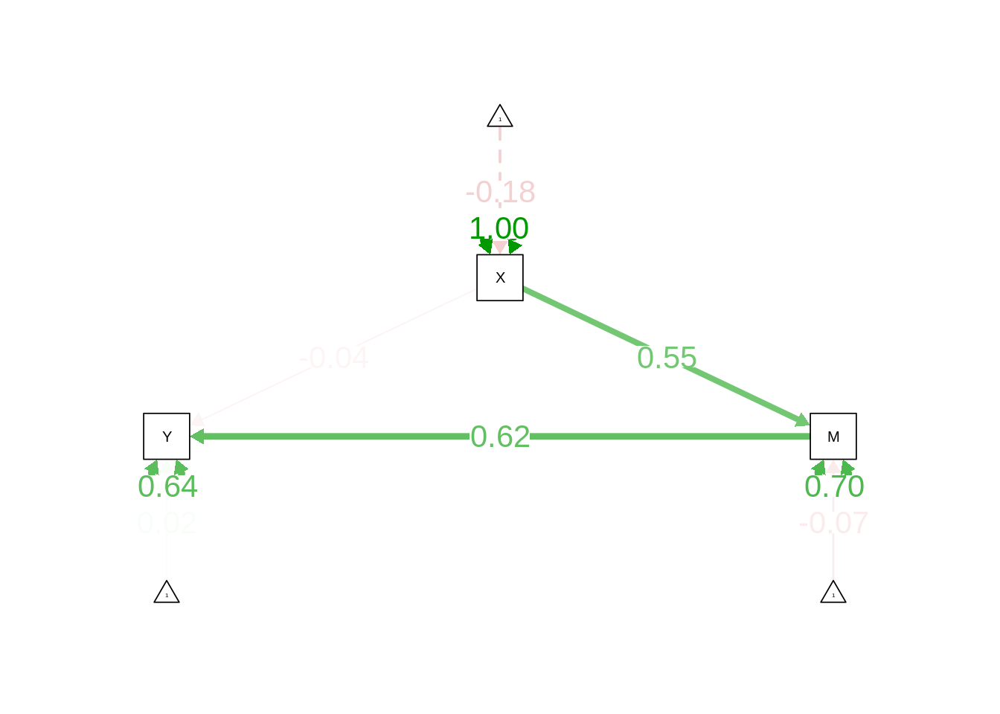

Structural Equation Modeling
1 Preamble
1.1 Install Libraries
#install.packages("remotes")
#remotes::install_git("https://research-git.uiowa.edu/PetersenLab/petersenlab.git")1.2 Load Libraries
library("lavaan")
library("semTools")
library("semPlot")2 Simulate Data
set.seed(52242)
X <- rnorm(100)
M <- 0.5*X + rnorm(100)
Y <- 0.7*M + rnorm(100)
mydata <- data.frame(X = X, Y = Y, M = M)3 Import data
5 Analysis examples
https://isaactpetersen.github.io/Principles-Psychological-Assessment/sem.html#semModel-sem
6 Mediation
6.1 Model Syntax
mediationModel <- '
# direct effect (cPrime)
Y ~ direct*X
# mediator
M ~ a*X
Y ~ b*M
# indirect effect = a*b
indirect := a*b
# total effect (c)
total := direct + indirect
'6.2 Fit the Model
mediationFit <- sem(mediationModel,
data = mydata,
se = "bootstrap",
bootstrap = 1000, # generally use 10,000 bootstrap draws; this example uses 1,000 for speed
missing = "ML",
estimator = "ML",
std.lv = TRUE)6.3 Summary Output
summary(mediationFit,
fit.measures = TRUE,
standardized = TRUE,
rsquare = TRUE)lavaan 0.6-12 ended normally after 11 iterations
Estimator ML
Optimization method NLMINB
Number of model parameters 7
Number of observations 100
Number of missing patterns 1
Model Test User Model:
Test statistic 0.000
Degrees of freedom 0
Model Test Baseline Model:
Test statistic 79.768
Degrees of freedom 3
P-value 0.000
User Model versus Baseline Model:
Comparative Fit Index (CFI) 1.000
Tucker-Lewis Index (TLI) 1.000
Loglikelihood and Information Criteria:
Loglikelihood user model (H0) -256.804
Loglikelihood unrestricted model (H1) -256.804
Akaike (AIC) 527.609
Bayesian (BIC) 545.845
Sample-size adjusted Bayesian (BIC) 523.737
Root Mean Square Error of Approximation:
RMSEA 0.000
90 Percent confidence interval - lower 0.000
90 Percent confidence interval - upper 0.000
P-value RMSEA <= 0.05 NA
Standardized Root Mean Square Residual:
SRMR 0.000
Parameter Estimates:
Standard errors Bootstrap
Number of requested bootstrap draws 1000
Number of successful bootstrap draws 1000
Regressions:
Estimate Std.Err z-value P(>|z|) Std.lv Std.all
Y ~
X (drct) -0.045 0.106 -0.426 0.670 -0.045 -0.038
M ~
X (a) 0.568 0.089 6.375 0.000 0.568 0.549
Y ~
M (b) 0.714 0.120 5.936 0.000 0.714 0.616
Intercepts:
Estimate Std.Err z-value P(>|z|) Std.lv Std.all
.Y 0.028 0.094 0.300 0.765 0.028 0.024
.M -0.072 0.081 -0.891 0.373 -0.072 -0.073
Variances:
Estimate Std.Err z-value P(>|z|) Std.lv Std.all
.Y 0.850 0.127 6.696 0.000 0.850 0.644
.M 0.686 0.083 8.247 0.000 0.686 0.699
R-Square:
Estimate
Y 0.356
M 0.301
Defined Parameters:
Estimate Std.Err z-value P(>|z|) Std.lv Std.all
indirect 0.406 0.096 4.207 0.000 0.406 0.338
total 0.361 0.104 3.483 0.000 0.361 0.3006.4 Indirect Effect
parameterEstimates(mediationFit,
boot.ci.type = "bca.simple",
standardized = TRUE)6.5 Estimates of Model Fit
fitMeasures(mediationFit, fit.measures = c("chisq", "df", "pvalue",
"rmsea", "cfi", "tli", "srmr")) chisq df pvalue rmsea cfi tli srmr
0 0 NA 0 1 1 0 6.6 Residuals
residuals(mediationFit, type = "cor")$type
[1] "cor.bollen"
$cov
Y M X
Y 0
M 0 0
X 0 0 0
$mean
Y M X
0 0 0 6.7 Modification Indices
modificationindices(mediationFit, sort. = TRUE)6.8 Internal Consistency Reliability
compRelSEM(mediationFit)named numeric(0)6.9 Path Diagram
semPaths(mediationFit,
what = "Std.all",
layout = "tree2",
edge.label.cex = 1.5)
7 Power analysis
8 Session Info
sessionInfo()R version 4.2.1 (2022-06-23)
Platform: x86_64-pc-linux-gnu (64-bit)
Running under: Ubuntu 20.04.4 LTS
Matrix products: default
BLAS: /usr/lib/x86_64-linux-gnu/blas/libblas.so.3.9.0
LAPACK: /usr/lib/x86_64-linux-gnu/lapack/liblapack.so.3.9.0
locale:
[1] LC_CTYPE=C.UTF-8 LC_NUMERIC=C LC_TIME=C.UTF-8
[4] LC_COLLATE=C.UTF-8 LC_MONETARY=C.UTF-8 LC_MESSAGES=C.UTF-8
[7] LC_PAPER=C.UTF-8 LC_NAME=C LC_ADDRESS=C
[10] LC_TELEPHONE=C LC_MEASUREMENT=C.UTF-8 LC_IDENTIFICATION=C
attached base packages:
[1] stats graphics grDevices utils datasets methods base
other attached packages:
[1] semPlot_1.1.6 semTools_0.5-6 lavaan_0.6-12
loaded via a namespace (and not attached):
[1] nlme_3.1-157 RColorBrewer_1.1-3 mi_1.1
[4] tools_4.2.1 backports_1.4.1 bslib_0.4.0
[7] utf8_1.2.2 R6_2.5.1 rpart_4.1.16
[10] Hmisc_4.7-1 DBI_1.1.3 colorspace_2.0-3
[13] nnet_7.3-17 tidyselect_1.1.2 gridExtra_2.3
[16] mnormt_2.1.0 compiler_4.2.1 fdrtool_1.2.17
[19] qgraph_1.9.2 cli_3.3.0 htmlTable_2.4.1
[22] sass_0.4.2 scales_1.2.0 checkmate_2.1.0
[25] psych_2.2.5 pbapply_1.5-0 sem_3.1-15
[28] stringr_1.4.0 digest_0.6.29 pbivnorm_0.6.0
[31] foreign_0.8-82 minqa_1.2.4 rmarkdown_2.14
[34] base64enc_0.1-3 jpeg_0.1-9 pkgconfig_2.0.3
[37] htmltools_0.5.3 lme4_1.1-30 lisrelToR_0.1.5
[40] highr_0.9 fastmap_1.1.0 htmlwidgets_1.5.4
[43] rlang_1.0.4 rstudioapi_0.13 jquerylib_0.1.4
[46] generics_0.1.3 jsonlite_1.8.0 gtools_3.9.3
[49] dplyr_1.0.9 zip_2.2.0 magrittr_2.0.3
[52] OpenMx_2.20.6 Formula_1.2-4 interp_1.1-3
[55] Matrix_1.4-1 Rcpp_1.0.9 munsell_0.5.0
[58] fansi_1.0.3 abind_1.4-5 rockchalk_1.8.157
[61] lifecycle_1.0.1 stringi_1.7.8 yaml_2.3.5
[64] carData_3.0-5 MASS_7.3-57 plyr_1.8.7
[67] grid_4.2.1 parallel_4.2.1 deldir_1.0-6
[70] lattice_0.20-45 kutils_1.70 splines_4.2.1
[73] knitr_1.39 pillar_1.8.0 igraph_1.3.4
[76] boot_1.3-28 corpcor_1.6.10 reshape2_1.4.4
[79] stats4_4.2.1 XML_3.99-0.10 glue_1.6.2
[82] evaluate_0.16 latticeExtra_0.6-30 RcppParallel_5.1.5
[85] data.table_1.14.2 png_0.1-7 vctrs_0.4.1
[88] nloptr_2.0.3 gtable_0.3.0 purrr_0.3.4
[91] assertthat_0.2.1 cachem_1.0.6 ggplot2_3.3.6
[94] xfun_0.32 openxlsx_4.2.5 xtable_1.8-4
[97] coda_0.19-4 glasso_1.11 survival_3.3-1
[100] tibble_3.1.8 arm_1.12-2 cluster_2.1.3 LS0tCnRpdGxlOiAiU3RydWN0dXJhbCBFcXVhdGlvbiBNb2RlbGluZyIKLS0tCgpgYGB7ciBzZXR1cCwgaW5jbHVkZSA9IEZBTFNFfQprbml0cjo6b3B0c19jaHVuayRzZXQoZWNobyA9IFRSVUUsCiAgICAgICAgICAgICAgICAgICAgICBlcnJvciA9IFRSVUUsCiAgICAgICAgICAgICAgICAgICAgICBjb21tZW50ID0gIiIsCiAgICAgICAgICAgICAgICAgICAgICBjbGFzcy5zb3VyY2UgPSAiZm9sZC1zaG93IikKYGBgCgojIFByZWFtYmxlCgojIyBJbnN0YWxsIExpYnJhcmllcwoKYGBge3IsIGNsYXNzLnNvdXJjZSA9ICJmb2xkLWhpZGUifQojaW5zdGFsbC5wYWNrYWdlcygicmVtb3RlcyIpCiNyZW1vdGVzOjppbnN0YWxsX2dpdCgiaHR0cHM6Ly9yZXNlYXJjaC1naXQudWlvd2EuZWR1L1BldGVyc2VuTGFiL3BldGVyc2VubGFiLmdpdCIpCmBgYAoKIyMgTG9hZCBMaWJyYXJpZXMKCmBgYHtyLCBtZXNzYWdlID0gRkFMU0UsIHdhcm5pbmcgPSBGQUxTRSwgY2xhc3Muc291cmNlID0gImZvbGQtaGlkZSJ9CmxpYnJhcnkoImxhdmFhbiIpCmxpYnJhcnkoInNlbVRvb2xzIikKbGlicmFyeSgic2VtUGxvdCIpCmBgYAoKIyBTaW11bGF0ZSBEYXRhCgpgYGB7ciwgY2xhc3Muc291cmNlID0gImZvbGQtaGlkZSJ9CnNldC5zZWVkKDUyMjQyKQoKWCA8LSBybm9ybSgxMDApCk0gPC0gMC41KlggKyBybm9ybSgxMDApClkgPC0gMC43Kk0gKyBybm9ybSgxMDApCgpteWRhdGEgPC0gZGF0YS5mcmFtZShYID0gWCwgWSA9IFksIE0gPSBNKQpgYGAKCiMgSW1wb3J0IGRhdGEKCiMgT3ZlcnZpZXcKCmh0dHBzOi8vaXNhYWN0cGV0ZXJzZW4uZ2l0aHViLmlvL1ByaW5jaXBsZXMtUHN5Y2hvbG9naWNhbC1Bc3Nlc3NtZW50L3NlbS5odG1sCgojIEFuYWx5c2lzIGV4YW1wbGVzCgpodHRwczovL2lzYWFjdHBldGVyc2VuLmdpdGh1Yi5pby9QcmluY2lwbGVzLVBzeWNob2xvZ2ljYWwtQXNzZXNzbWVudC9zZW0uaHRtbCNzZW1Nb2RlbC1zZW0KCiMgTWVkaWF0aW9uIHsjbWVkaWF0aW9ufQoKIyMgTW9kZWwgU3ludGF4CgpgYGB7cn0KbWVkaWF0aW9uTW9kZWwgPC0gJwojIGRpcmVjdCBlZmZlY3QgKGNQcmltZSkKWSB+IGRpcmVjdCpYCgojIG1lZGlhdG9yCk0gfiBhKlgKWSB+IGIqTQoKIyBpbmRpcmVjdCBlZmZlY3QgPSBhKmIKaW5kaXJlY3QgOj0gYSpiCgojIHRvdGFsIGVmZmVjdCAoYykKdG90YWwgOj0gZGlyZWN0ICsgaW5kaXJlY3QKJwpgYGAKCiMjIEZpdCB0aGUgTW9kZWwKCmBgYHtyfQptZWRpYXRpb25GaXQgPC0gc2VtKG1lZGlhdGlvbk1vZGVsLAogICAgICAgICAgICAgICAgICAgIGRhdGEgPSBteWRhdGEsCiAgICAgICAgICAgICAgICAgICAgc2UgPSAiYm9vdHN0cmFwIiwKICAgICAgICAgICAgICAgICAgICBib290c3RyYXAgPSAxMDAwLCAjIGdlbmVyYWxseSB1c2UgMTAsMDAwIGJvb3RzdHJhcCBkcmF3czsgdGhpcyBleGFtcGxlIHVzZXMgMSwwMDAgZm9yIHNwZWVkCiAgICAgICAgICAgICAgICAgICAgbWlzc2luZyA9ICJNTCIsCiAgICAgICAgICAgICAgICAgICAgZXN0aW1hdG9yID0gIk1MIiwKICAgICAgICAgICAgICAgICAgICBzdGQubHYgPSBUUlVFKQpgYGAKCiMjIFN1bW1hcnkgT3V0cHV0CgpgYGB7cn0Kc3VtbWFyeShtZWRpYXRpb25GaXQsCiAgICAgICAgZml0Lm1lYXN1cmVzID0gVFJVRSwKICAgICAgICBzdGFuZGFyZGl6ZWQgPSBUUlVFLAogICAgICAgIHJzcXVhcmUgPSBUUlVFKQpgYGAKCiMjIEluZGlyZWN0IEVmZmVjdAoKYGBge3J9CnBhcmFtZXRlckVzdGltYXRlcyhtZWRpYXRpb25GaXQsCiAgICAgICAgICAgICAgICAgICBib290LmNpLnR5cGUgPSAiYmNhLnNpbXBsZSIsCiAgICAgICAgICAgICAgICAgICBzdGFuZGFyZGl6ZWQgPSBUUlVFKQpgYGAKCiMjIEVzdGltYXRlcyBvZiBNb2RlbCBGaXQKCmBgYHtyfQpmaXRNZWFzdXJlcyhtZWRpYXRpb25GaXQsIGZpdC5tZWFzdXJlcyA9IGMoImNoaXNxIiwgImRmIiwgInB2YWx1ZSIsCiAgICAgICAgICAgICAgICAgICAgICAgICAgICAgICAgICAgICAgICAgICAicm1zZWEiLCAiY2ZpIiwgInRsaSIsICJzcm1yIikpCmBgYAoKIyMgUmVzaWR1YWxzCgpgYGB7cn0KcmVzaWR1YWxzKG1lZGlhdGlvbkZpdCwgdHlwZSA9ICJjb3IiKQpgYGAKCiMjIE1vZGlmaWNhdGlvbiBJbmRpY2VzCgpgYGB7cn0KbW9kaWZpY2F0aW9uaW5kaWNlcyhtZWRpYXRpb25GaXQsIHNvcnQuID0gVFJVRSkKYGBgCgojIyBJbnRlcm5hbCBDb25zaXN0ZW5jeSBSZWxpYWJpbGl0eQoKYGBge3J9CmNvbXBSZWxTRU0obWVkaWF0aW9uRml0KQpgYGAKCiMjIFBhdGggRGlhZ3JhbQoKYGBge3J9CnNlbVBhdGhzKG1lZGlhdGlvbkZpdCwKICAgICAgICAgd2hhdCA9ICJTdGQuYWxsIiwKICAgICAgICAgbGF5b3V0ID0gInRyZWUyIiwKICAgICAgICAgZWRnZS5sYWJlbC5jZXggPSAxLjUpCmBgYAoKIyBQb3dlciBhbmFseXNpcwoKaHR0cHM6Ly9pc2FhY3RwZXRlcnNlbi5naXRodWIuaW8vUHJpbmNpcGxlcy1Qc3ljaG9sb2dpY2FsLUFzc2Vzc21lbnQvc2VtLmh0bWwjbW9udGVDYXJsb1Bvd2VyQW5hbHlzaXMKCiMgU2Vzc2lvbiBJbmZvCgpgYGB7ciwgY2xhc3Muc291cmNlID0gImZvbGQtaGlkZSJ9CnNlc3Npb25JbmZvKCkKYGBgCg==